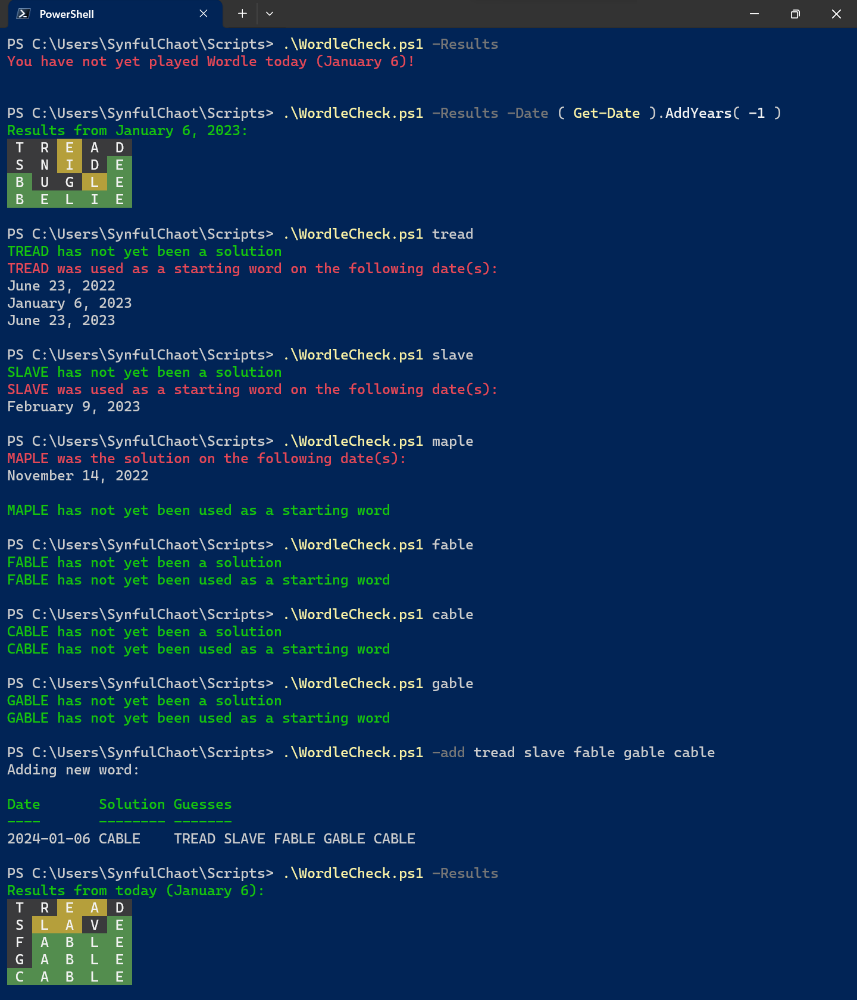

Wordle
Wordle. A simple game. An old viral craze. An ongoing, albeit personal, obsession.
I’ve always loved word games … which isn’t surprising in the slightest given my passion for the written word, whether the writer is myself or someone else. Usually that game is Scrabble, a game I’ve played with family for many years. Now I won’t say I’m a master at Scrabble, or that I could get anywhere near placing in a tournament, but my grandmother did play in several tournaments and I could usually hold my own against her. Even managed wins with some level of regularity.
But this isn’t about Scrabble. This is about Wordle.
My interest in Wordle didn’t start early, before the game really took off. I, like many others, joined in when it started going viral in January of 2022. At the tail end of it, actually. January 31st to be precise.
Now how do I know that was the precise day? Because I’ve been keeping track, of course. It’s useful to know past solutions so you don’t accidentally use them again as the game has, to this day, yet to repeat a single word.
Now it hasn’t just been the solutions I’ve been keeping track of. It has been every. Single. Word. To start off with I just screencapped every game and skimmed through the folder when about to try out a word, and that worked well enough for a good months. As time went on, though, it was getting more and more difficult to not miss one … especially as I made it a personal challenge to use different starting words every day. Don’t ask why as I couldn’t tell you. Literally.
So what was my solution? Same as most times I run into something I need to record and calculate. I wrote a script.
Now many might tell me that there are better ways. One would be to use someone’s already existent online tool. That wouldn’t let me look up my prior starting words, though … and to me it’d feel like cheating as I wouldn’t know exactly how said tool functioned. One of those ways would be an Excel spreadsheet, which is my other go-to. In this particular case, though, I wanted to be able to look up and display some data that would be more than a bit messy in spreadsheet form. Another would be to do something a bit more … ‘user-friendly’ and write up some interactive webpage. The problem with that is … I don’t know how. That and that I love scripting and will often use any excuse I can to have some fun.
With this script I experimented with something I’d not done before, and something that is likely not very good practice. That something is having the script save information in the script itself instead of in an external file. The reason for this is I intended to share this script with others - others that are less tech savvy than myself - and I didn’t want them to accidentally delete the data file and then wonder where all the data went. I think it’s a cool trick. YMMV.
I also learned, just recently, that the new Terminal on Windows has a problematic handling of emoji that have variants, which my v.3 version of the script utilized. In the Bash Terminal on Linux Mint, the characters I was using defaulted to their base version. In Windows Terminal it defaulted to the emoji variant, which is a different size and can’t display with a specific colour, and you can’t set it to use the base version. This, of course, necessitated a change in how I ‘render’ the results … which is now a bit less pretty (though just as functional).
Backstory aside, here’s how it works on Windows in its current revision (v.4):

Now I know it could be a bit more user-friendly, and I certainly don’t need the previous starting words on any check but for the starting word, but I’ll admit I’ve just been too lazy to clean it up further as I work around it. Since it’s in a broken state on Linux atm, for reasons I don’t yet know, I’ll likely get to updating it soon(ish).
Current (known) issues:
- Script can’t handle an empty saved word list. Currently ‘initialized’ with the word from 2024-01-06.
- Script doesn’t work properly on Linux, but does on Windows, and I’m not sure why. Previous version did work on Linux, but not Windows, and I’m also not sure why. PowerShell Core can be irritatingly strange sometimes.
Anyways, if you want to use it yourself, are curious on how it works, or are bored and want to fix it, you can find the script here!